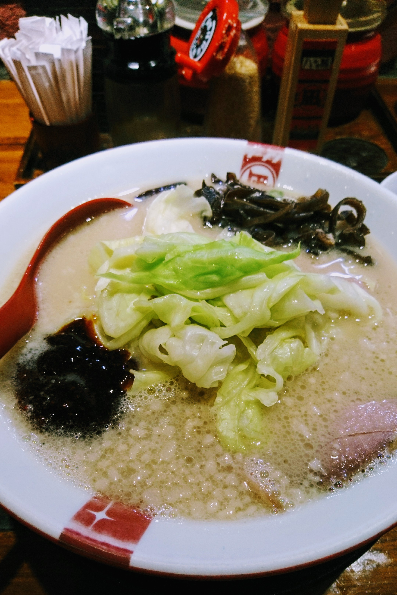

<!DOCTYPE html>
<html lang="zh-hant">
<head>
  <meta charset="UTF-8">
  <meta name="viewport" content="width=device-width, initial-scale=1.0">
  <meta http-equiv="X-UA-Compatible" content="ie=edge">
  <title>豚骨拉麵 Nagi 凪 大直店 | J食記</title>
  <style>
    html, body {
      margin: 0;
    }

    h1 {
      border-left: 5px solid rgb(190, 0, 0);
      padding-left: 18px;
      margin-bottom: 10px;
    }

    h2:not(:first-of-type) {
      margin-top: 100px;
    }

    blockquote {
      font-style: italic;
      color: #333;
      margin-bottom: 50px;
      line-height: 1.5;
    }

    p {
      font-size: 18px;
      color: #666;
      line-height: 1.5;
    }

    img {
      max-width: 100%;
    }

    iframe {
      border: none;
    }

    .container {
      max-width: 750px;
      padding-left: 20px;
      padding-right: 20px;
      margin-left: auto;
      margin-right: auto;
      margin-bottom: 200px;
    }

    .author {
      width: 100%;
      display: block;
      text-align: right;
      color: #777;
      margin-bottom: 50px;
    }

    .intro-img {
      width: 100%;
    }
  </style>
</head>
<body>
  <main>
    
    <div class="container">
      <h1>豚骨拉麵 Nagi 凪 大直店</h1>
      <small class="author">文/ Jas Chen</small>
      <blockquote>
        其實 Nagi 拉麵在我心中根本排不上前5名，但不知為何我有的最多拉麵照片就是 Nagi，
        只好來介紹他了。
      </blockquote>

      <h2>意外大塊的豬腩叉燒</h2>
      
      <p>
        第一次來什麼都不知道，就選了「豚王」配「豬腩叉燒」，好大一塊啊！喜歡吃肉的朋友會很滿足。
        <br>
        滷得十分入味，並且肥瘦適中。
      </p>
      <p>
        可以注意到他的味玉（溏心蛋）做得非常漂亮，彷彿可以流動的蛋黃嚐起來非常美味，口感極佳。
      </p>

      <h2>爽口高麗菜，還是細麵好吃</h2>
      
      <p>
        之後來過一次點了「太麵」，也就是比較粗的麵，湯汁的比例就沒有細麵高（細麵有更多縫隙可以吸附湯汁），
        並不是很好的體驗，所以下定決定之後再來都要點細麵。
      </p>
      <p>
        爽口的高麗菜解解豚骨湯的油膩是很讚的選擇，但是這樣就沒蔥了嗚嗚。
      </p>

      <h2>為什麼 Nagi 排不上前5？</h2>
      <p>
        其實 Nagi 表現得並不差（但我有一次吃到半熟的味玉很不開心），
        無法排上前5的原因是我認為沒有特色，畢竟豚骨拉麵處處有，高麗菜、叉燒、味玉都是常見的配菜，沒有出眾之處。
      </p>
      <p>
        Nagi 拉麵在心中就像星巴克一樣吧，就是一個品質蠻穩定、定價稍高，突然嘴饞時最容易吃到的拉麵（台北分店有夠多）。
      </p>
      <h2>Info</h2>
      <iframe src="https://www.google.com/maps/embed?pb=!1m18!1m12!1m3!1d115673.39733495035!2d121.53065280196827!3d25.041075392770793!2m3!1f0!2f0!3f0!3m2!1i1024!2i768!4f13.1!3m3!1m2!1s0x3442ac12d5b2c3a1%3A0xdf136b00ad0a9cb0!2z6LGa6aqo5ouJ6bq1IE5hZ2kg5YeqIOWkp-ebtOW6lw!5e0!3m2!1szh-TW!2stw!4v1511365693316" width="400" height="300" style="border:0" allowfullscreen></iframe>
    </div>
  </main>
</body>
</html>